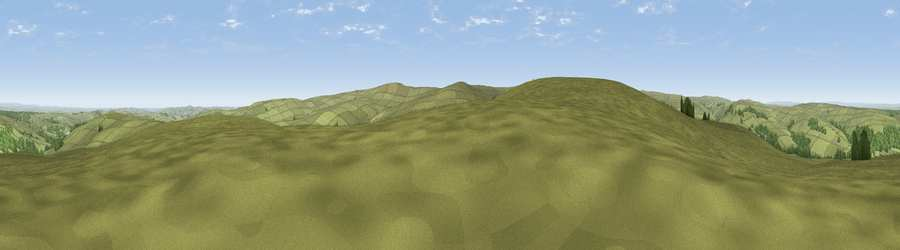

Viewpoint near Blanchland
#10015 in England · top 18% of its area beats it · near BlanchlandWhere it is
The exact computed spot (NY 97100 48275). Click the marker for map links.
The view, rendered

A 360° render of this exact spot computed from the terrain model, tree cover and land cover — summer colours, afternoon light, calibrated against photographs of famous viewpoints. Real trees, hedges and buildings will differ in detail.
The panorama
Grey silhouette: terrain skyline in each direction (720 bearings, Earth curvature and refraction included). Dashed green: skyline with trees (+15 m) and buildings (+8 m) as obstacles. Blue strip: how far the ground is visible on each bearing.
Where the view opens
Wedge length = distance to the farthest visible ground on that bearing (vegetation-aware). Rings at 10, 25 and 50 km.
What fills the view
89% grassland · 9% woodland · 1% cropland
Angular shares of the visible panorama (visual magnitude), not map area. Landscape diversity 0.18 (0–1 Shannon).
Key numbers
More beautiful places nearby
The staircase of upgrades: each row has a higher view potential than everything closer. Driving times are estimates from straight-line distance, calibrated against real road routing — check an actual route before setting out.
| Place | Direction | Drive | Score |
|---|---|---|---|
| Viewpoint near Rookhope | S · 3 km | ~7 min | 64.2 |
| Bainbridge Hill | NE · 3 km | ~7 min | 66.7 |
| Viewpoint near Rookhope | SW · 4 km | ~8 min | 70.4 |
| Collier Law | SE · 8 km | ~16 min | 71.7 |
| Viewpoint near Allenheads | WSW · 15 km | ~27 min | 74.6 |
| Pontop Pike | ENE · 18 km | ~32 min | 77.8 |
| Little Dun Fell | WSW · 31 km | ~48 min | 78.4 |
| Cross Fell | WSW · 32 km | ~49 min | 78.7 |
54.82930, -2.04667 · source: screening · position refined by local search. Computed location — check access rights before visiting.